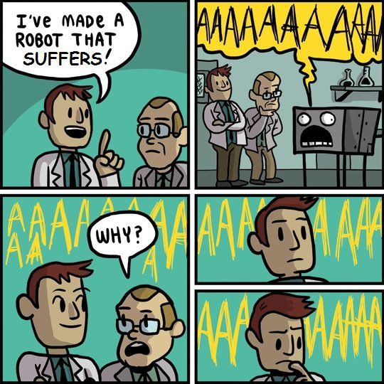

The Case Against Efilism: Why Efilism Will Never Win
Table of Contents
- 1. Definitions
- 2. Efilists Are Wrong About Demographic Transition Theory
- 3. Efilism Can’t Distinguish Rhetoric From Actual Arguments
- 4. Efilism Is A Self-Defeating Ideology
- 5. Hedonism Is Not Self-Evident
- 6. The Natalists Would Destroy The Efilists If Their Movement Grew Large Enough
- 7. Why It Should Be Illegal To Be An Efilist Activist
- 8. The Vast Ignorance Of Anti-Natalists And Efilists
- 9. Conclusion
NOTE: I haven’t finished writing this page.
1. Definitions
- Efilism
- A negative-utilitarian philosophy/religion supported by the observation and analysis of determinism, materialism, and unintelligent design, taken to the conclusion of the Benevolent World-Exploder Proposal.
- Unintelligent Design
- A range of biological phenomena characterized by Darwinian Evolution and unnecessary suffering, including the consumption, competition, reproduction, and death experienced by all sentient life.
- Benevolent World-Exploder Proposal
- An absolutist, negative-utilitarian ethic in favor of annihilating the Earth and euthanizing all its sentient life.
- Hedonistic Imperative
- An absolutist, negative-utilitarian ethic in favor of genetically re-engineering all sentient life to be devoid of suffering.
1.1. The Main Premises of Efilism
- Life is violent.
- There is vastly more pain than pleasure.
- Negative Utilitarian Hedonism
- Morality is not perspective-dependent.
- Humans have a moral obligation to be altruistic, to the extent of doing the Benevolent World Exploder.
- We should interfere with the natural state of the Universe, even if it will be a self-defeating endeavor.
The only premise that I agree with is #1, and while I also agree with #6 that it is okay to “interfere with the Natural Order of things” up to a limited extent, I don’t believe that it’s worth doing so if the outcome will ultimately be self-defeating (see: Efilism Is A Self-Defeating Ideology). The other three premises are false assumptions.
1.2. The Argument For Efilism
Supposedly, this scenario really wouldn’t be that bad. We could create a new reality with no crimes against humanity, a 0% cancer rate, 0% starvation, 0% homeless, 0% poverty, 0% depression, zero need to work 40+ hours a week, no rapes, no deaths, no genocides, no wars, no slaughterhouses, no parasites, no animals eating animals, no pain, and no evil. Just eternal peace commenced through eternal nonexistence. There are a lot of good things to like about this.

2. Efilists Are Wrong About Demographic Transition Theory
One of the reasons why the Efilists believe that they have a chance at achieving their ultimate goal “the Benevolent World Exploder” is that most of them believe in Demographic Transition Theory.
Unfortunately for their movement, Demographic Transition Theory is wrong. Although Inmendham has repeatedly advocated in favor of it many times, but he is completely wrong that educating people in developing countries and raising living standards in the rest of the world will lead to a long-term decline in global fertility rates, as it could only be a temporary decline at most.
The religious fundamentalists and other people with the highest fertility rates will out-compete the rest of the entire world, and the genes and memes that caused child-free people to choose not to have children will die out. The end result is that the genes that caused higher fertility rates will become more populous, and this will cause the world population to skyrocket once more until it crashes against the carrying capacity ceiling. The world population will not max out at 11-12 billion people, and if it does, that will only be because the world population reached the carrying capacity of the Earth.
Why haven’t Efilists figured this out though? They believe in one of the only philosophies on Earth that is based on extensive evolutionary reasoning, and yet they have made a completely wrong conclusion about the long-term future of the world’s human population.
3. Efilism Can’t Distinguish Rhetoric From Actual Arguments
4. Efilism Is A Self-Defeating Ideology
Efilism will never win, because it is self-defeating, intrinsically contradictory, and diametrically opposed to the Universe itself.
- Efilism is philosophically self-defeating because it values the absence of value, a performative contradiction.
- Efilism is biologically self-defeating because altruism never wins against selfishness in Evolutionary Theory.
- Efilism is psychologically self-defeating because it is incompatible with the psychological desires to have sex and raise children.
- Efilism is ethically self-defeating because it argues that it is immoral to have children without their prior consent, but it also argues that it is ethical to euthanize people without their consent.
- Efilism is physically self-defeating because the end of life would never be the complete uninhabitability of the Earth, but rather “we have to travel across the galaxy to locations X, Y, and Z to eradicate all the life on those planetary bodies as well! And then we must eradicate the life at locations A, B, C, D, E, F G, H, …. and so on…”
You are a reproducing machine, whether you like it or not. You can choose to embrace that, or you can choose to detest it. But it you choose the latter, then you will never have a consistent philosophy because you will always be at odd with your own desires, emotions, and instincts.
In any case, it will always make vastly more sense to kill people who don’t want to live than to kill people who do want to live.
5. Hedonism Is Not Self-Evident
There are several major problems with claiming that pain is “intrinsically bad” and that pleasure is “intrinsically good”:
- Pain is necessary to drive motivation. We wouldn’t do anything in this world if we didn’t have to endure at least a little bit of pain to do all the various things that we do. For instance, if pain is necessary to motivate you to accomplish your Efilist goal, the Benevolent World Exploder, then you would have to agree with me that there are at least some instances where pain is a good thing. I challenge you to refute this.
- Pain only exists in the moment (it is transient), so pain cannot be stored in one’s mind. If you are a negative utilitarian, how could you possibly add up all the transient experiences that you’ve experienced in your life. Pain and pleasure are transient experiences, so it doesn’t make sense to insist that we should add them all over time when we don’t even have objective units to measure those experiences.
Even if we should add up pain and pleasure over time, they would balance out anyway.
“Mathematically, we can model pain and pleasure (the hedonic dimension) as the first derivative of motivation as a function of time. Let’s use M to denote motivation and P to denote the first derivative of M. When M increases, P is positive, which corresponds to pain. When M decreases, P is negative, which corresponds to pleasure. If we assume that your life begins and ends with M = 0, then the integral of P over your lifetime is zero. In other words, total pain + total pleasure = zero.” – Blithering Genius, in Motivation
- “bad” and “well-being” are both subjective. Not everybody agrees with negative utilitarianism. Some people prefer average utilitarianism instead for instance. Since well-being is subjective, so is Utilitarianism, and so are your morals. The reason why there’s so many different forms of utilitarianism is precisely because well-being is subjective.
- The concept of the Positive and Negative Hedonic Treadmills concludes that even if you did experience a lot of pain or pleasure, then eventually you would get used to it, and it wouldn’t matter to you anymore.
- In order for the symmetric theory of pain and pleasure to be true, there would to be an equivalent of the Hedonic Treadmill for pain as there is for pleasure.
- According to Efilists, existence is basically torture. So if they’re still choosing to stay alive, then many of them are performatively proving that they’re not really hedonists by continuing to exist, right?
- Although a lot of happiness surveys do show that people are “happier” when they have better material conditions (e.g. they make a decent living in a first-world country), they are very unreliable.
- These surveys don’t define “happiness” to the people who answer them.
- Nor do they have a philosophy of emotions to back them up.
- Nor do they consider whether we should have a hedonist theory/philosophy of value either.
- Happiness is also subjective, so what one person considers happiness may not be the same as how someone else defines it.
- The self-reported nature of these studies also introduces another source of unreliability.
Hedonism is not self evident.
Also See: Consciousness Thought Experiments.
6. The Natalists Would Destroy The Efilists If Their Movement Grew Large Enough
Will Efilism become a movement someday?
No, because if Efilism ever does grow big enough (say millions of self-identified Efilists), the Natalists will make the natural choice to kill and destroy all of the Efilists. The Efilists have literally already said that they would skin literally everybody alive and destroy the Earth if they had the means to do it, so the Natalists would conclude that if they want to continue living, then they’ll have to kill and purge every single Efilist in the name of what they would they would call “Self-Defense”.
If the Efilists ever dared to destroy the Earth, it would be very easy to get public support to arrest and execute all the Efilists before they could ever begin to carry it out. Governments all over the world would pass legislation declaring Efilists to be enemies of the State, and they would all be sentenced to death. If the Efilists believe that they could potentially accomplish their ultimate goal by doing activism and spreading the word, then they really haven’t thought this through all the way. It’s really weird how they’ll talk with other Efilists on public forums like r/Efilism about their plans to destroy the Earth, as if there isn’t anyone listening in on them that would be keen to stop them in their tracks and punish them.
Most Efilists hate their lives and would rather be dead instead of alive anyways, so if all of them were killed by the natalists (who want to live before they killed the natalists themselves, the deaths of the Efilists could be further rationalized as having done a favor for most of them. After all, doesn’t it make more sense to kill/euthanize people who don’t want to live than to kill people who do want to live?
Natalists could also rationalize eliminating all of them. Most of the Efilists hate their lives and wish that they had never born in the first place, so if the Efilists were all put to sleep, not only would the Natalists be saving themselves in case the Efilists ever get out of control, but we would also be doing them a favor by putting an end to their lives which they wish they never had in the first place. Just because they hate their lives, that shouldn’t mean that people who enjoy their lives shouldn’t have to have theirs end as well.
7. Why It Should Be Illegal To Be An Efilist Activist
I’m all for supporting truly free speech, and I think that more discussion about Efilism as a philosophy should be encouraged, but where I draw the line is when Efilists are trying to recruit people to do harmful, illegal, and threatening activity.
- In Gary Mosher Inmendham’s and Amanda Sukenick’s Own Words
- Doing Whatever Is Necessary To Destroy The Earth Would Be Justifiable
- This asshole Efilist who wants to deliberately pollute the Earth as much as possible:
- u/hodlbtcxrp’s Reddit Profile
- u/hodlbtcxrp argues for polluting the planet as much as possible: 1
- u/hodlbtcxrp argues for polluting the planet as much as possible: 2
- u/hodlbtcxrp argues for polluting the planet as much as possible: 3
- u/hodlbtcxrp argues for polluting the planet as much as possible: 4
8. The Vast Ignorance Of Anti-Natalists And Efilists
Efilists and Anti-Natalists are ignorant. Since they’ve rejected life and are only focused on destroying it, they don’t care much at all about developing a good understanding of the world. Some examples:
- They aren’t interested in understanding epistemology and critical thinking skills. They are only interested in destroying the Earth and humanity.
- Many of them don’t have any interest in thinking about philosophy beyond negative utilitarian ethics, leftist/communist ideas. The end result is massive ignorance.
- For so many of them, they would hardly have any identity left if they couldn’t define themselves as atheist, vegan, efilist/anti-natalist/pro-mortalist/VHEMT, etc.
- They tried a prescriptivist attempt to put an entry about antinatalism into English dictionaries, without understanding that dictionaries are supposed to be descriptivist, non-partisan, and based on corpus data.
- Note: Antinatalism did eventually make it into many modern English dictionaries a few years after they first attempted their activist project, but that was only because the increase in online and published material talking about antinatalism finally meant the lexicographers’ standards for what can and cannot be included in their dictionaries.
- They incorrectly predicted that the COVID-19 lockdowns would cause a baby boom, when in fact they actually caused a sharp decline in the population growth rate.
- They believe in altruism, but most of them fail to recognize that altruism will eventually lose as evolution takes its course.
- Efilists have high hopes that fewer births will result due to the conditions of modernity and education, but they fail to realize that this evolutionary mismatch won’t last forever because Demographic Transition Theory is wrong and birth control is the real factor that controls the decline in human populations and population growth rates.
- They believe that more Efilists will keep being born for the same reason why gay people keep being born even though both lead to reproductive demise, but this is also wrong to an extent since Efilism and Anti-Natalism are memetic diseases that are destined to decline in popularity.
- They fail to recognize the performative contradiction in valuing the absence of value.
- Hard-core Efilists claim to be against suffering, and yet they’re willing to cause any amount of suffering that they believe is necessary just to kill everyone and destroy the Earth.
- Many Efilists believe that Inmendham is a master debater, but he clearly isn’t. He doesn’t watch his opponents response videos in their entirety, nor does he address the actual arguments being made by his opponents. He just throws ad hominem after ad hominem, analogy after analogy, blabbers on while “disagreeing to agree”, and he gets hung up on terminology. And this is ultimately to the detriment of their movement since they have no counter-arguments against these arguments, and because they’re just watching Inmendham without watching the original video, they’re obliviously unaware of what some valid counter-arguments against Efilism even are.
- Many Efilists believe that Inmendham’s Bitforce Theory of Physics is right, but it has absolutely no scientific consensus and basic calculus contradicts the theory, instead of backing it up.
- Many of them believe in objective morality, but this is easy to debunk.
- Many of them mistakenly believe that reason is the basis for said objective morality, but this is also debunked since morality depends on subjective values, not sound reasoning.
- Most of them assume altruism and negative hedonism to be self-evident, but they’re not self-evident.
- Most of them are Leftists, Communists, and/or Anarcho-Communists. They are clueless about economics, and they fail to recognize that Georgism is the correct solution to most of our main economic problems, woes, and inequalities.
- i
- i
One of the biggest reasons why I personally reject Efilism is because as soon as someone wholeheartedly rejects life, there is no reason to explore the rest of philosophy. If someone does learn about Efilism, it shouldn’t be the end of their philosophical exploration. If anything, it should be just the beginning. Knowledge is arguably the ultimate value, or at least one of them, since knowledge is necessary to conclude Efilism. Thus, even if someone is inclined to accept Efilism upon being introduced to it, how can they know for sure that they’re right if the poverty of knowledge (Plato’s Problem) could lead virtually anyone to believe in potentially anything?
Although I and presumably many other humans have a natural intuition to assume that humans will never be powerful enough to destroy the universe, is this really true? Or is it a cognitive bias since destroying the universe would seem like defying gravity? (breaking the rules of reality that we have instinctively learned and experienced ever since we were infants)
The fact that supreme knowledge is one of the most important values since it affects all the reasoning and conclusions that we ultimately make is one of the reasons why I am inclined to reject David Pearce’s reasoning that the Pleasure Versus Pain Axis is the ultimate value.
9. Conclusion
In spite of all my criticisms against Efilism and the refusal of Efilists to question their moral assumptions, I can at least respect Efilism for being a notable attempt to create a rational worldview based on (negative) utilitarianism and hedonism that is very creative in comparison to the mainstream humanist culture.